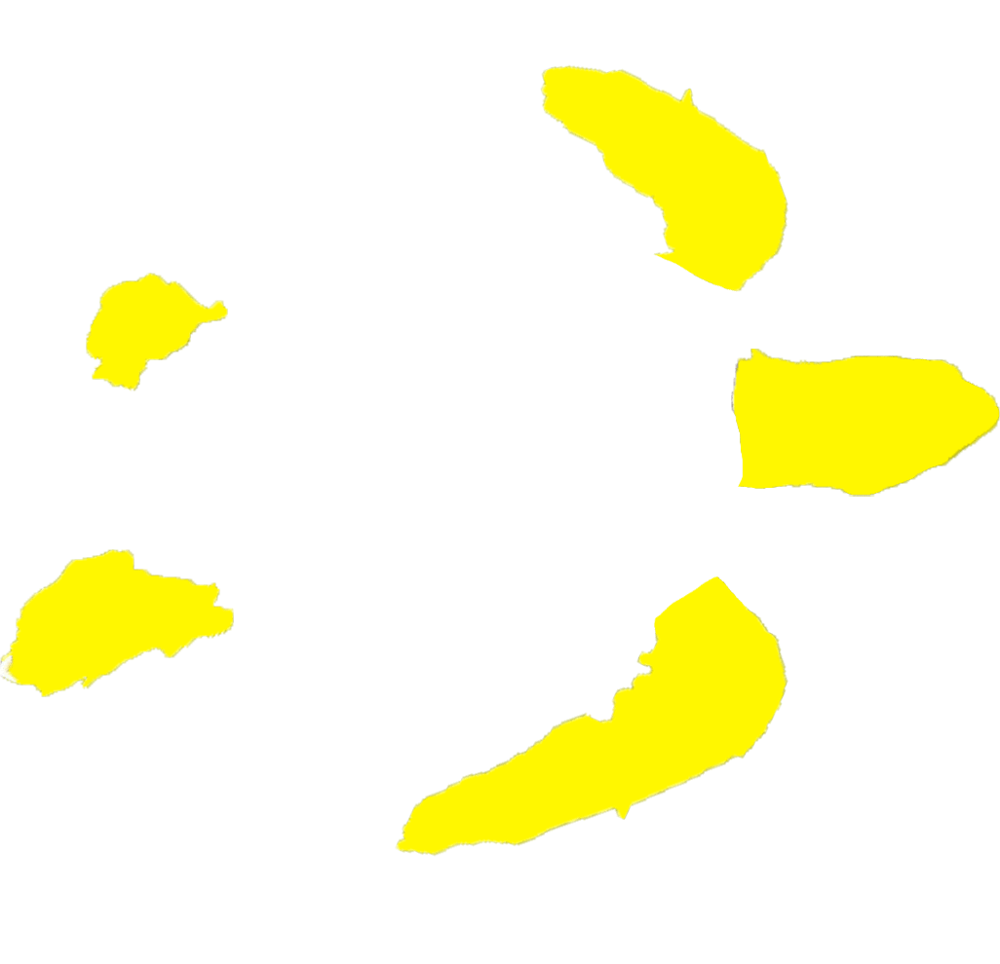
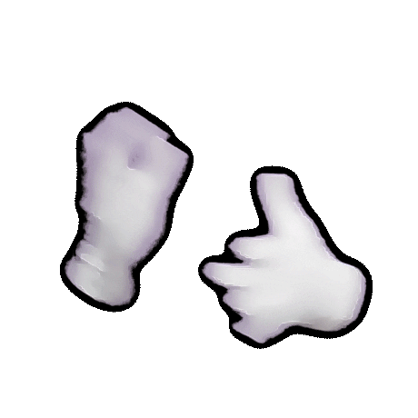
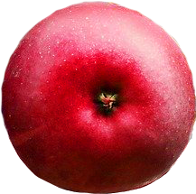
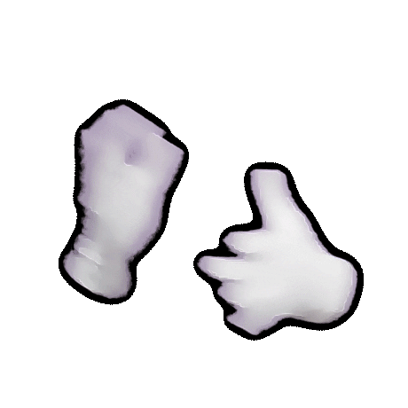
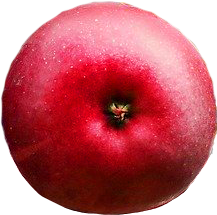

1. 토끼와 거북이
토끼와 거북이가 달리기 경주를 시작했다. 육지에서 느린 거북이가 질 것이 뻔해보였다.


인내는 용기와 굉장히 비슷해서 용기의 언니 또는 어머니로 보일 정도다 - 아리스토텔레스
인내심은 아이가 깨달아야 하는 첫번째 교훈이다. - 장자크 루소
인내심을 갖추는 것만으로도 위대하고 고귀한 힘을 가진 것이다. - 호레이스 부쉬넬
토끼와 거북이가 달리기 경주를 시작했다. 육지에서 느린 거북이가 질 것이 뻔해보였다.

토끼가 보이지 않아도. 눈 앞이 빙글빙글 돌아 앞이 보이지 않아도. 거북이는 계속 달렸다.
끝까지 참고 견딘 거북이는 결국 토끼를 이기고 인내의 열매를 얻었다.
 



인내는 용기와 굉장히 비슷해서 용기의 언니 또는 어머니로 보일 정도다 - 아리스토텔레스
인내심은 아이가 깨달아야 하는 첫번째 교훈이다. - 장자크 루소
인내심을 갖추는 것만으로도 위대하고 고귀한 힘을 가진 것이다. - 호레이스 부쉬넬